Happiness, trust, and deaths under COVID-19
Chapter Contents
Introduction
This ninth World Happiness Report is unlike any that have come before. COVID-19 has shaken, taken, and reshaped lives everywhere. In this chapter, our central purpose remains just what it has always been – to measure and use subjective well-being to track and explain the quality of lives all over the globe. Our capacity to do this has been shaken at the same time as the lives we are struggling to assess. While still relying on the Gallup World Poll as our primary source for our measures of the quality of life, this year, we tap a broader variety of data to trace the size and distribution of the happiness impacts of COVID-19. We also devote equal efforts to unravelling how geography, demography, and the spread of the virus have interacted with each country’s scientific knowledge and social and political underpinnings, especially their institutional and social trust levels explain international differences in death rates from COVID-19.
First, we shall present the overall life evaluations and measures of positive and negative emotions (affect) for those countries for which 2020 surveys are available. The resulting rankings exclude the many countries without 2020 surveys, and the smaller sample sizes, compared to the three-year averages usually used, increase their imprecision. We then place these rankings beside those based on data for 2017-2019, before COVID-19 struck, and also present our usual ranking figure based on the three-year average of life evaluations 2018-2020.
Second, we use responses at the individual level to investigate how COVID-19 has affected the happiness of different population subgroups, thus attempting to assess possible inequalities in the distribution of the well-being consequences of COVID-19.
Third, we review and extend the evidence on the links between trust and well-being. We find evidence that trust and benevolence are strong supports for well-being, and also for successful strategies to control COVID-19. We present new evidence on the power of expected benevolence, as measured by the extent to which people think their lost wallets would be returned if found by neighbours, strangers, or the police. All are found to be strong supports for well-being, and for effective COVID-19 strategies.
Fourth, we turn to examine how different features of national demographic, social and political structures have combined with the consequences of policy strategies and disease exposure to help explain international differences in 2020 death rates from COVID-19. A central feature of our evidence is the extent to which the quality of the social context, and especially the extent to which people trust their governments, and have trust in the benevolence of others, supports not only their ability to maintain their happiness before and during the pandemic but also reduces the COVID-19 death toll by facilitating more effective strategies for limiting the spread of the pandemic while maintaining and building a sense of common purpose.
Our results are summarized in a short concluding section.
Technical Box 1: Measuring Subjective Well-Being.
Our measurement of subjective well-being relies on three main indicators: life evaluations, positive emotions, and negative emotions (described in the report as positive and negative affect). Our happiness rankings are based on life evaluations, as the more stable measure of the quality of people’s lives. In World Happiness Report 2021, we pay more attention than usual to specific daily emotions (the components of positive and negative affect) to better track how COVID-19 has altered different aspects of life.
Life evaluations. The Gallup World Poll, which remains the principal source of data in this report, asks respondents to evaluate their current life as a whole using the image of a ladder, with the best possible life for them as a 10 and worst possible as a 0. Each respondent provides a numerical response on this scale, referred to as the Cantril ladder. Typically, around 1,000 responses are gathered annually for each country. Weighted averages are used to construct population-representative national averages for each year in each country. We base our usual happiness rankings on a three-year average to increase the sample size to give more precise estimates. This year, in order to focus on the effects of COVID-19, we consider how life evaluations and emotions in 2020 compare to their averages for 2017-2019.
Positive emotions. Respondents to the Gallup World Poll are asked whether they smiled or laughed a lot yesterday and whether they experienced enjoyment during a lot of yesterday. For each of these two questions, if a person says no, their response is coded as 0. If a person says yes, their response is coded as a 1. We calculate the average response for each person, with values ranging from 0 and 1. When needed, we use weighted averages across all individuals surveyed within a country to give national averages for positive affect.
Negative emotions. Negative affect is measured by asking respondents whether they experienced specific negative emotions during a lot of the day yesterday. Negative affect, for each person, is given by the average of their yes or no answers about three emotions: worry, sadness, and anger. National averages are created in the same way as for positive affect.
Comparing life evaluations and emotions:
Life evaluations provide the most informative measure for international comparisons because they capture quality of life in a more complete and stable way than emotional reports based on daily experiences.
Life evaluations differ more between countries than emotions and are better explained by the widely differing life experiences in different countries. Emotions yesterday are well explained by events of the day being asked about, while life evaluations more closely reflect the circumstances of life as a whole. But we find and will show later in the chapter that emotions are significant supports for life evaluations.
Positive emotions are almost three times more frequent (global average of 0.71) than negative emotions (global average of 0.27).
How have life evaluations and emotions evolved in 2020?
The Gallup World Poll, which has been our principal source of data for assessing lives around the globe, has not been able to conduct the face-to-face interviews that were previously used for more than three-quarters of the countries surveyed. Conversion from computer-assisted personal interviews (CAPI) to computer-assisted telephone interviews (CATI) has been difficult and time-consuming. The 2020 round of surveys is about two-thirds as large as usual. The change of mode does not affect the industrial countries, most of which were already being surveyed by telephone in previous years. Earlier research on the effect of survey mode has shown that answers to some questions differ between telephone and in-person surveys, while answers to well-being questions were subject to very small mode effects. Recent UK large-sample evidence found life satisfaction to be only 0.04 points higher by telephone than in-person interviewing.[1] However, the shift from personal interviews to phone surveys may in some countries have changed the pool of respondents in various ways, only some of which can be adjusted for by weighting techniques. This leads us to be somewhat cautious when interpreting the results reported for 2020. But the overall rankings for 2020, especially among the top countries, are unlikely to have been altered by pure mode effects, since most of the top countries were already being reached by telephone surveys prior to 2020, while the countries that shifted to telephone mode in 2020 (marked by an asterisk beside their country names in Table 2.1) are grouped further down in the rankings.
Global life evaluations have shown remarkable resilience in the face of COVID-19.
Regular readers of this report will remember that our rankings are based on the average of surveys from the three previous years, so the number of countries covered by our usual procedures is somewhat less affected. Most countries not surveyed in 2020 continue to be represented by their 2018 and 2019 survey results. This year’s version, along with the estimated contributions from our six supporting factors, appears here as Figure 2.1. Given our emphasis on life under COVID-19, we also pay special attention to the 2020 surveys and compare them with 2017-2019 data.
First a look at the primary data for 2020. The first column of Table 2.1 shows ranked orderings of average national life evaluations based on the 2020 surveys, accompanied in the second column by a ranked list of the same countries based on the 2017-2019 surveys used for the national rankings in World Happiness Report 2020. From the 95% confidence regions shown for both series, it is easy to see that the bands are much wider for 2020, primarily because the sample sizes are generally 1,000 compared to 3,000 for the combined sample covering 2017-2019.
Figure 2.1 combines the 2020 data with that from 2018 and 2019, just as done in a normal year. The figure covers 149 countries, because countries are included as long as they have had one or more surveys in the 2018-2020 averaging period. Country positions in all three rankings are quite similar. Comparing the first two rankings, where the number of countries is the same, the pairwise rank correlation is 0.92. Comparing the 2017-2019 rankings with those based on the 2018-2020 data, for the 95 countries with data for 2020, the rank correlation is 0.99. This shows that COVID-19 has led to only modest changes in the overall rankings, reflecting both the global nature of the pandemic and a widely shared resilience in the face of it.
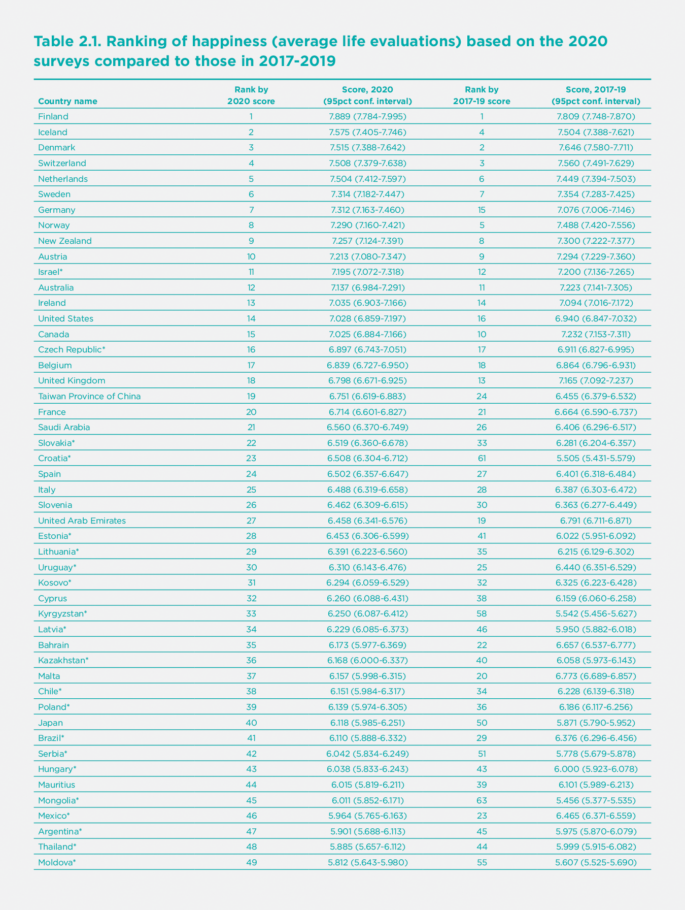
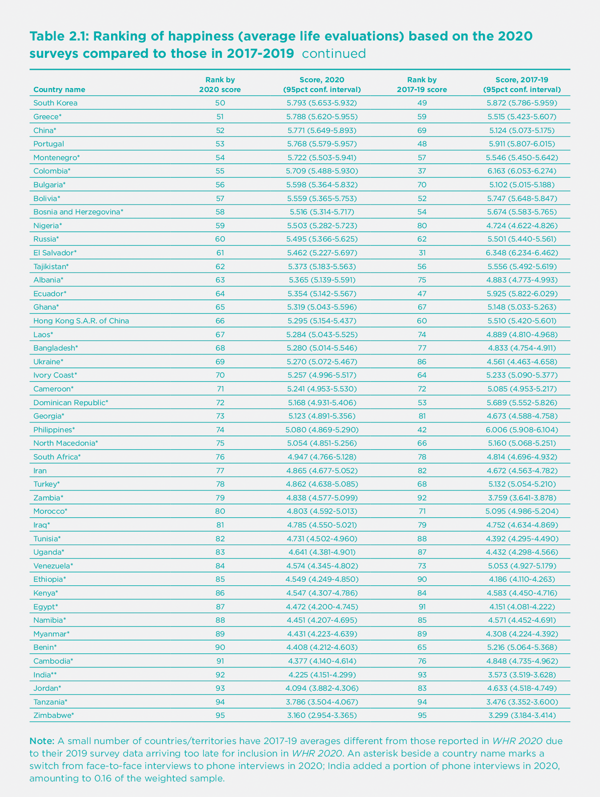

We remind readers that the rankings in Figure 2.1 depend only on the average life evaluations reported by respondents in the Gallup surveys, and not on our model to explain the international differences. The first six sub-bars for each country/territory reflect our efforts to attribute the reported life evaluation score in that country to its average income, life expectancy and four social factors. The final bar includes two elements. The first is the residual error, the part of the national average that our model does not explain. The second is the estimated life evaluation in a mythical country called dystopia, since its score is the model’s predicted life evaluation (2.43) for an imaginary country having the world’s lowest observed values for each of the six variables. With dystopia and the residual included, the sum of all the sub-bars adds up to the actual average life evaluations on which the rankings are based. For more details, please refer to previous annual reports, including WHR 2020, and the Statistical Appendix 1.
To get a more precise impression of the direction and size of the national level changes during 2020, Table 2.2 shows the size and significance of changes from 2017-2019 average to 2020 for each country’s life evaluations, positive affect, and negative affect. The countries in each column are listed in the order of the estimated size of the changes, with the most improved conditions shown at the top of each list. The first column shows the average changes in life evaluations, on the scale of 0 to 10. The second column shows increases in the average frequency for two measures of positive affect (laughter and enjoyment), where the scale is zero where none of the emotions was felt a lot on the previous day, and 1.0 if all respondents frequently felt all measures on the previous day. The third column shows the average for three measures of negative affect (worry, sadness and anger), but in the reverse ordering, with the countries at the top being those in which the frequency of negative affect has fallen. In all cases, asterisks show the level of statistical significance of the changes.
The pandemic’s toll on negative emotions is clear.
Using the data from all 95 countries, life evaluations showed an insignificant increase from 2017-2019 to 2020 (+0.036, p=0.354) in a regression analysis of individual-level data for changes in reported means.[2] Negative affect showed a significant increase (+0.023, p<0.001) while positive affect was unchanged (-0.000, p=0.991). When comparing changes in life evaluations and emotions, it is important to remember that life evaluations are on a 0 to 10 scale, while emotions are on a 0 to 1 scale. Within negative affect, worry (+0.032, p<0.001) and sadness (+0.029, p<0.001) have both shown statistically significant increases for the global sample of countries, while anger has not changed. Within positive affect, both laughter and enjoyment yesterday were mostly unchanged between 2017-2019 and 2020. Among other COVID-interesting variables in the Gallup World Poll, the reported frequency of stress shows an increase in 2020 (+0.021, p=0.002). There was an increase in the number of people who did something interesting yesterday (+0.031, p<0.001), and in the share of respondents who felt well-rested (+0.014, p=0.007). There was also a significant drop in the reported frequency of health problems (-0.029, p<0.001), which we shall show later was concentrated among those over 60 years of age.
The results in Table 2.2 reveal a considerable variety of national changes in life evaluations and emotions, with the overall stability of the global and regional trends comprising differing national experiences.
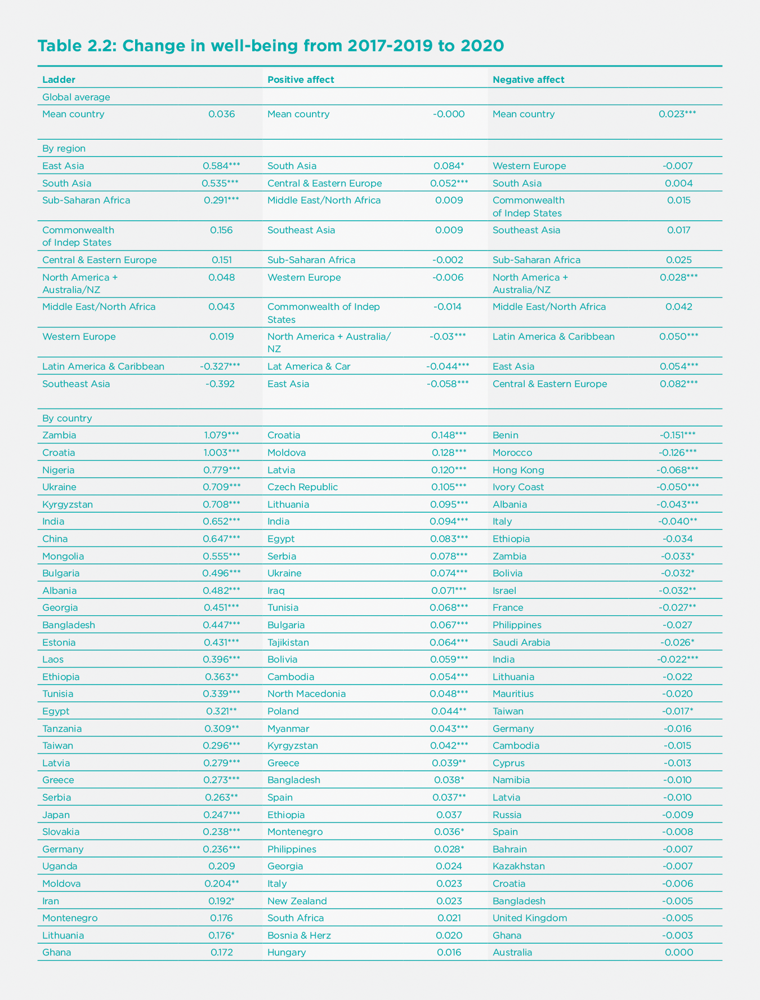
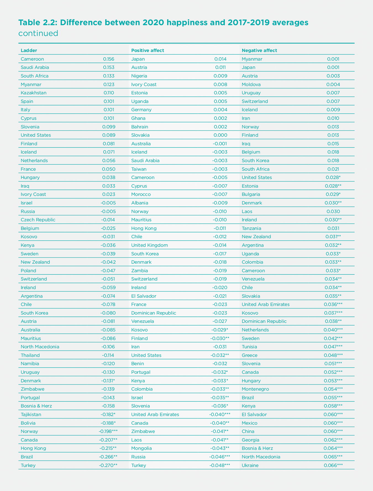
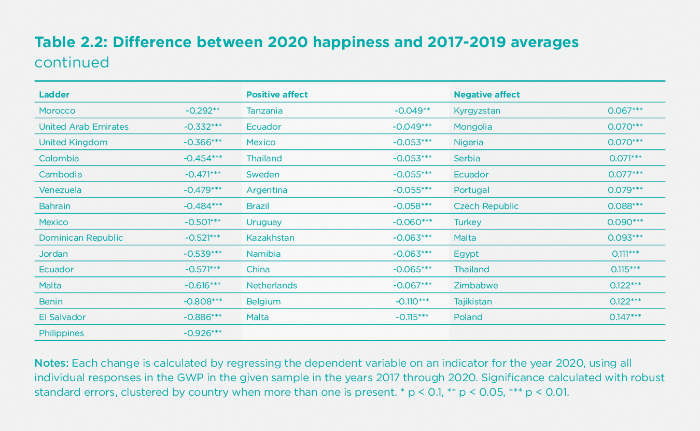
For all our measures of subjective well-being and their main determinants, there are some countries with significant improvements and others where life has gotten worse. For life evaluations, there are 26 countries with significant increases, and 20 with decreases marked by two (p<0.05) or three (p<0.01) asterisks. The pandemic’s toll on negative emotions is clear, with 42 countries showing significantly higher frequency of negative emotions, compared to 9 where they were significantly less frequent. Positive emotions lie in the middle ground, with 22 countries on the upside and 25 heading down, in all cases relative to the average values in 2017-2019. Given how all lives have been so importantly disrupted, it is remarkable that the averages are so stable.
Many countries with large increases in life evaluations also shifted from in-person to telephone mode in 2020. This led us to investigate more broadly if there was a more general upward movement of life evaluations in countries that shifted from in-person to telephone samples. For the 61 switching countries other than China, there was an average increase of 0.055 points. For the 32 countries that used telephone interview throughout the sample period, there was an average drop of 0.049 points. In neither case was the change statistically significant. Although changes in the composition of surveyed populations may underlie some of the very large life evaluation increases in China and perhaps other countries, the data suggest that the effects of the method change are unlikely to have been large enough for the world as a whole to mask any large drops. As already noted, a careful study of mode effects in the United Kingdom estimated pure mode effects to be 0.04 points, not large enough to materially affect country rankings. Almost all of the top-ranking countries used telephone surveys before 2020, so that for them there has been no shift in mode. There have been both in-person and telephone samples for India, with the in-person responses being lower than telephone responses, while significantly higher than in-person responses in 2019. Hence the reversal in 2020 of the longer-term slide in Indian life evaluations was not attributable to mode effects.
Comparing the Gallup World Poll data with other sources
How do these Gallup World Poll results compare with those from other international surveys and data from national sources? Other chapters in this report review many of the scores of studies documenting how different aspects of well-being have been affected by COVID-19. We concentrate on surveys with large nationally representative samples, mostly obtained by repeated surveys of different representatives from the same underlying population.
Comparing the Gallup World Poll data with other surveys where survey modes have not changed helps to show the extent to which the change in survey mode for many Gallup World Poll countries is affecting the overall pattern of changes. We also provide data from two UK surveys with several observations during 2020 to help expose how evaluations were changing during the course of the year. The relative stability within the year confirms our finding that the date of survey did not have systematic effects on the 2020 evaluations. The Gallup surveys were all taken after the start of the pandemic, with fewer than 2% of interviews taking place before March 15^th^.
Our broadest comparison is for a group of European countries for which the Eurobarometer annually collects life satisfaction responses for about 1,000 respondents in each of 34 countries. For the whole sample of roughly 34,000 respondents, life satisfaction measured on a four-point response scale, converted to a 0 to 10 scale, averaged 6.66 in 2019 and 6.64 in 2020. The Eurobarometer and the Gallup World Poll provide consistent information about international differences in life evaluations. For the 30 countries with data available for 2019 and 2020 in both surveys, the two surveys provide quite consistent cross-country rankings. The rankings from the two surveys are well correlated, both for 2019 (r=0.84) and for 2020 (r=0.80). Given the generally small size of the year-to-year changes in both surveys, the changes from 2019 to 2020 are not correlated across the two surveys, sometimes moving in the same direction, and sometimes not. Here are several examples, in some cases supported by national polls:
For the United Kingdom, average Gallup World Poll life evaluation fell from 7.16 in 2019 to 6.80 in 2020, while the Eurobarometer life satisfaction measure fell from 7.74 to 7.36, with both changes being of statistical significance. The UK Office for National Statistics (ONS) has recently published[3] life satisfaction, anxiety, happiness yesterday, and the extent to which people think that the things they do in their lives are worthwhile, all asked on the same 0 to 10 response scale, based on large samples drawn from the Labour Force Survey. These are probably the largest samples from any country enabling comparisons between each of the first three quarters of 2020 with the corresponding quarters of the 2019. Given the second wave of COVID-19 infections and deaths that started at the end of the summer, it is expected that all three measures will be worse in Q4. But the average results for the first three quarters are the data most comparable with the other surveys, all of which were undertaken in the first three quarters of the year. The ONS data, based on much larger samples, show a life satisfaction drop of 0.13 points on the 0 to 10 scale compared to 0.36 for the Gallup World Poll and 0.38 for the Eurobarometer. All three surveys provide a fairly consistent picture of moderate, but statistically significant, reductions in life evaluations using different surveys and question wording. The ONS estimates provide additional value from their large sample size, exposing quarterly patterns that match the pandemic stages and revealing larger but more quickly recovering changes for the emotions than for life evaluations. Between the two emotions, anxiety was affected almost twice as much as happiness yesterday.
To get some idea of the possible size of Q4 drops in life evaluations, Figure 2.2 brings together the ONS quarterly estimates of life satisfaction with the monthly Cantril ladder estimates drawn from the ICL/YouGov survey. The monthly data confirm the expectation that Q4 life satisfaction fell as infections, deaths, and lockdowns were all rising. It also shows an increase in December, when optimism was growing about the possibilities for vaccine efficacy and delivery. The 95% confidence intervals for the estimates are shown by vertical bars. The confidence regions for the ONS estimates are much tighter because their samples included more than 25,000 respondents in each quarter.
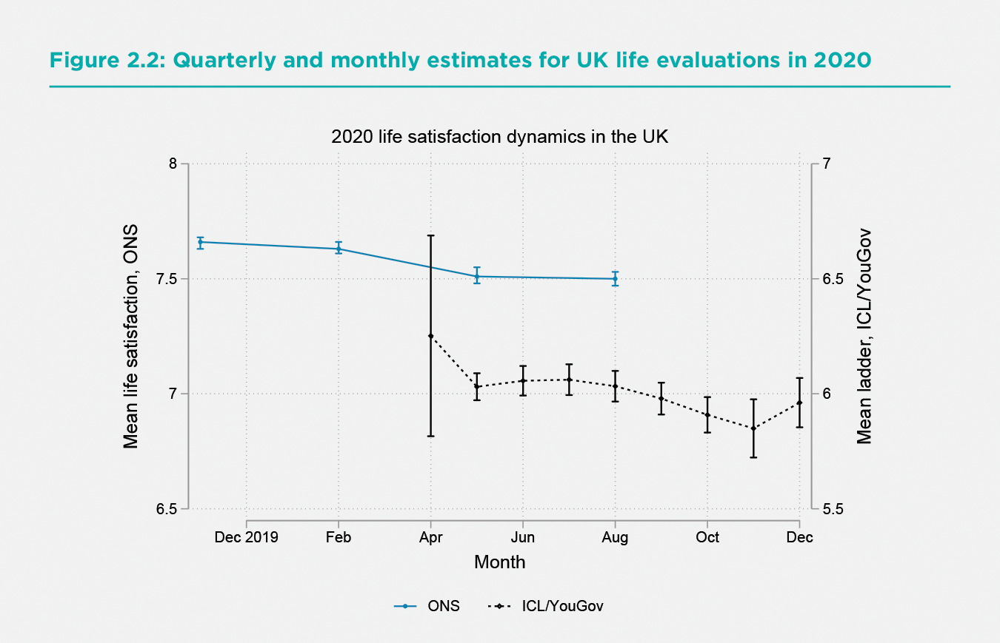
The ONS has also split their large samples by age and gender, providing some large sample counterpart to discussions in chapters 5 and 6 based generally on smaller samples of earlier data. Panel A of Figure 2.3 shows the dynamics for the four well-being measures collected by the ONS, reported separately for male and female respondents. For both genders, there is a ranking of effects, with life worthwhile being least affected, followed by life satisfaction, happiness, and anxiety. For both emotions- happiness yesterday and anxiety yesterday - the effects were largest during the lockdown Q2, and largely returned to baseline in Q3, when cases and fatalities seemed to be in check and restrictions were being lifted. The drops in life satisfaction and happiness, and the increases in anxiety, in Q2 were significantly greater for women than men, with the gender gap disappearing in Q3. Panel B shows the same four well-being measures for the population divided into three age groups. All four well-being measures were less changed for the young, who showed no little decline from Q1 to Q2 and no improvements from Q2 to Q3. The Q2 worsening and Q3 recovery were felt almost equally for both of the older age groups. Before and during the pandemic, life satisfaction was highest for those over 60, and lowest for those between 30 and 59. Although the advantage of the young relative to the middle-aged grew in Q1 and Q2, it shrank thereafter, and even crossed over for the emotional measures in Q3. How things evolved during the second and deadlier wave in Q4 is hinted at by the monthly data in Figure 2.2 but must await the larger ONS samples for a more complete story to be told.
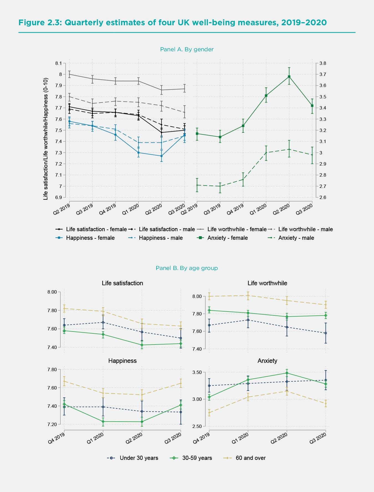
For Germany, the Eurobarometer data show slightly increased life evaluations from 2019 to 2020, while the Gallup World Poll shows a larger increase. For France, the Gallup World Poll and the Eurobarometer both show increases in average life evaluations from 2019 to 2020, significantly so in the latter case. Two national surveys for France match these increases.[4] For Finland, the two surveys tell slightly different stories, as life evaluations rise slightly in the Gallup World Poll, while falling in the Eurobarometer. For Italy, both surveys show life evaluations essentially unchanged from 2019 to 2020. As shown in Table 2.2 above, the 2020 Italian ladder score is higher than its average for 2017-2019, though the difference is not statistically significant.
As already indicated for the Gallup World Poll data, most countries did not significantly change in either survey. It is reassuring that the two surveys tell generally consistent stories about life evaluations in 2020, despite using different questions and response scales, and being fielded at different times.
How have the well-being effects of COVID-19 varied among population subgroups?
There have been numerous studies, ably surveyed in subsequent chapters, of how the effects of COVID-19, whether in terms of illness and death, or living conditions for the uninfected, have differed among population sub-groups. The fact that the virus is more easily transmitted in close living and working arrangements, where physical distancing can be challenging to maintain, partly explains the higher incidence of disease among those in elder care, prisons, hospitals, housing for migrant and temporary workers, and other forms of group living. Similarly, risks are higher for those employed in essential services, especially for front-line health care workers and others who deal with many members of the public or work in crowded conditions. Age has been the main factor separating those with differing risks of serious or fatal consequences, although relation is complicated by the preponderance of fatalities in elder-care settings where lower immune responses of the elderly are compounded by co-morbidities that partly explain why these individuals are in institutional care in the first place. Those with lower incomes are also thought to be more at risk, being perhaps more likely to be in high-risk workplaces, with fewer opportunities to work from home, and fewer resources to support the isolation required for those infected.
The Gallup World Poll data are not sufficiently fine-grained to separate respondents by their living or working arrangements, but they do provide several ways of testing for different patterns of consequences. In particular, we can separate respondents by age, gender, immigration status, income, unemployment, and general health status. Previous well-being research by ourselves and many others has shown subjective life evaluations to be lower for those who are unemployed, in poor health, and in the lowest income categories. In World Happiness Report 2015 we examined the distribution of life evaluations and emotions by age and gender, finding a widespread but not universal U-shape in age for life evaluations, with those under 30 and over 60 happier than those in between. Female life evaluations, and frequency of negative affect, were generally slightly higher than for males. For immigrants, we found in World Happiness Report 2018 that life evaluations of international migrants tend to move fairly quickly toward the levels of respondents born in the destination country.
In this section we shall first confirm these general findings using all individual-level data from the years 2017 through 2020, testing to see which if any of these effects have become larger or smaller in 2020. We use the 2020 effects as a proxy for the effects of COVID-19 and all related changes to economic and social circumstances, a simplification not easily avoided.
Table 2.3 shows the results of individual-level estimation of a version of the model that we regularly use to explain differences at the national level. We use the same column structure as in our usual Table 2.1, while adding more rows to introduce variables that help to explain differences among individuals but which average out at the national level. The first three columns show separate equations for life evaluations, positive affect and negative affect. The fourth column is a repeat of the life evaluation equation with positive and negative emotions as additional independent variables, reflecting their power to influence how people rate the lives they are leading.
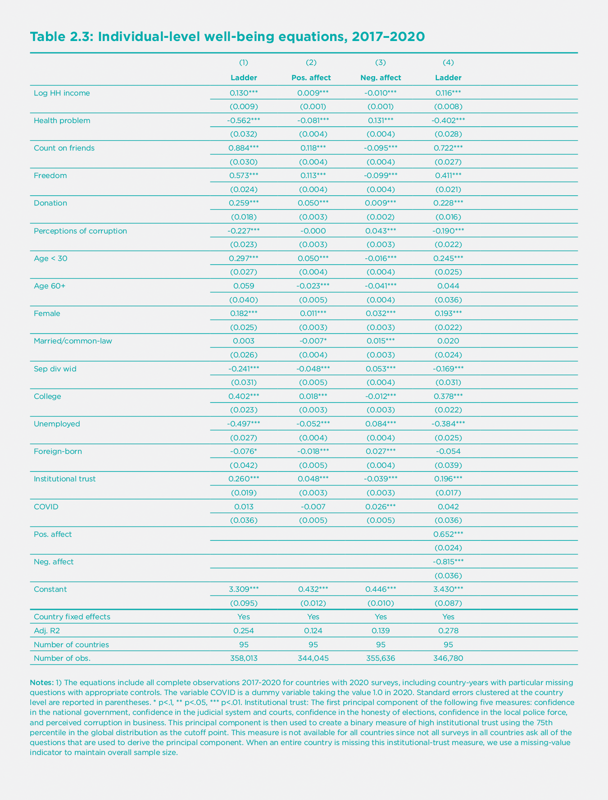
By adding a specific measure of institutional trust to our usual six variables explaining well-being, the effect of institutions is now split between the new variable and the usual perceptions of corruption in business and government. We leave both in the equation to show that the index for confidence in government represents more than just an absence of corruption. Indeed, we shall show later that it is the most important institutional variable explaining how nations have succeeded or failed in their attempts to control COVID-19.
The equations are estimated using about 1,000 respondents in each year from 2017 through 2020. The results show the continued importance of all the six variables we regularly use to explain differences among nations, as well as a number of additional individual-level variables. These additional variables include age, gender, marital status, education, unemployment and whether the respondent was born in another country. Income is represented by the logarithm of household income and health status by whether the respondent reports having health problems. The effects of COVID-19 are estimated by adding a variable (called COVID) equal to 1.0 for each 2020 survey respondent. These estimates for 2020 effects differ from those we have previously seen in the raw data because here we are estimating the 2020 effects beyond those that are due to changes in the main driving variables, some of which have themselves been affected by COVID-19.
Just as we found with the analysis of the basic data reported in previous tables and figures, and in most comparable population-representative surveys in other countries, the equations in Table 2.3 show that subjective well-being has been strikingly resilient in the face of COVID-19. As shown by the very small estimated coefficient on ‘COVID’, which is an indicator variable taking the value of 1.0 for each observation in 2020, there have been no significant changes in average life evaluations, while the frequency of positive emotions has fallen, and of negative emotions has risen, with the increase in negative emotions much higher than the reduction in positive emotions, in terms of shares of the population surveyed. Since the frequency of positive emotions in previous surveys is more than twice as large as for negative emotions (71% vs 27%), the increase in the numbers of those reporting negative emotions looms larger when measured, as is often done, in relation to the previous number of people reporting negative feelings. Thus, we find that while the percentage of the population feeling sad during a lot of the previous day grew by 2.9%, from 23.2% to 26.1% of the population, this represented a 12% increase in the number of people feeling sad during a lot of the previous day.
How do we square this substantial resiliency at the population level with evidence everywhere of lives and livelihoods torn asunder? First, it is important to note that some population subgroups hardest hit by the pandemic are not included in most surveys. For example, surveys usually exclude those living in elder care, hospitals, prisons, and most of those living on the streets and in refugee camps. These are populations that were already worse off and have been most affected by COVID-19.
Second, the shift from face-to-face interviews to cell phone surveys has tended to alter the characteristics of the surveyed population in ways that are hard to adjust for by usual weighting methods. For example, the average incomes of 2020 respondents in China were much larger than those of 2019 respondents, explicable in part because cell-phone sampling procedures would cover people living inside high income gated communities otherwise inaccessible by face-to-face methods.
Third, is it possible that the relative stability of subjective well-being in the face of the pandemic does not reflect resilience in the face of hardships, but instead suggests that life evaluations are inadequate measures of well-being? If the chosen measures do not move a lot under COVID-19, perhaps they will not change whatever happens. In response to this quite natural scepticism, it is important to remind ourselves that subjective life evaluations do change, and by very large amounts, when many key life circumstances change. For example, unemployment, discrimination, and several types of ill-health have large and sustained influences on measured life evaluations. Perhaps even more convincing is the evidence that that the happiness of immigrants tends to move quickly towards the levels and distributions of life evaluations of those born in their new countries of residence, and even in the sub-national regions to which they move.[5]
The monitoring of emotions has been especially important under COVID-19, since negative emotions have been the most affected of all the well-being measures. In a typical country, the number of people reporting being sad or worried in the previous day in 2020, compared to 2017-2019, was more than 10% greater for sadness (from 23.2% of the population to 26.1%) and 8% greater for worry (from 38.4% of the population to 41.5%).
The equations in Table 2.3 replicate the same general pattern as we normally show for the national-level data (analysis using national average data including 2020, shown in Statistical Appendix 1). Income, health, having someone to count on, having a sense of freedom to make key life decisions, generosity, and the absence of corruption all play strong roles in supporting life evaluations. Confidence in public institutions also plays an important role.
These large samples of individual responses can be used to show how average life evaluations, and the factors that support them, have varied among different sub-groups of the population. What do the results show? We start by reporting how the 2020 changes in life evaluations and emotions differ by population subgroups, and then consider two possible reasons for these differences. We first consider how the basic supports for well-being have changed for different subgroups, and then see whether the well-being effects of these conditions have become greater or less under COVID-19.
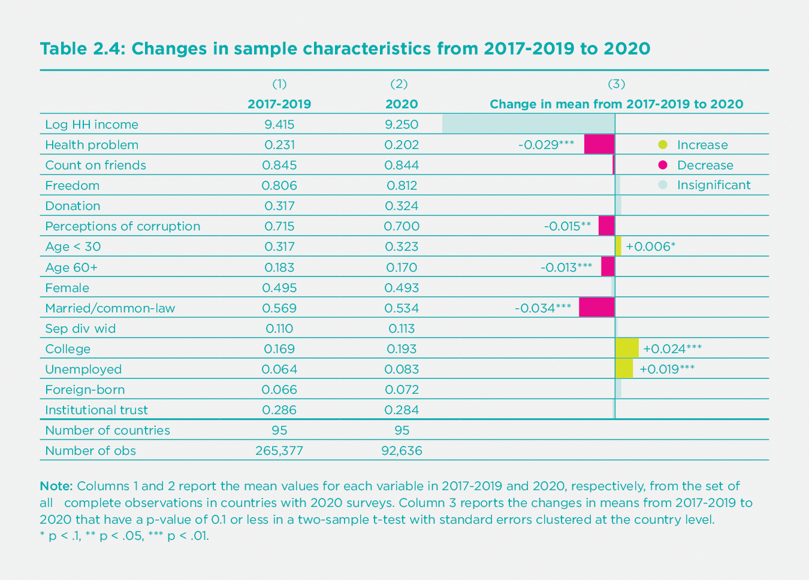
For the world sample, as shown in Table 2.4, and in most countries, there have been significant changes from 2017-2019 to 2020 in some of the key influences on life evaluations. There has been a significant increase in unemployment and negative emotions, offset by a reduction in the reported frequency of health problems. The frequency of the reporting of health problems fell from 23% to 20% for the population as a whole.[6] These changes, and the related improvements in well-being are concentrated among those over the age of 60, where the frequency of reported health problems fell from 46% to 36% for men and from 51% to 42% for women. Among the survey respondents, the increases in unemployment were concentrated among those under 30, where it was up from 9.2% to 10.2% (p=.006) for men and up from 10.5% to 14.6% for women (p<.001), and those between 30 and 60, up from 5.1% to 6.3% (p<.001) for men and from 5.8% to 8.0% (p<.001) for women. Unemployment increases were much larger for those in the bottom quarter of their country’s income distribution (up from 8.3% to 11.8%, p<.001).
In Table 2.5 we repeat the basic equation for life evaluations in Table 2.3, but now fit separate equations for 2017-2019 and for 2020. This permits us to see to what extent the happiness impacts of COVID-19 have varied among population sub-groups.
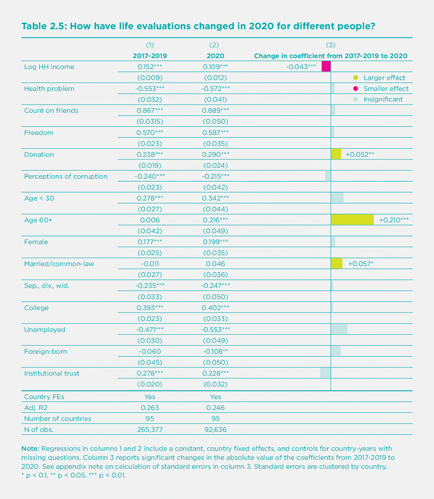
Regressions in columns 1 and 2 include a constant, country fixed effects, and controls for country-years with missing questions. Column 3 reports significant changes in the absolute value of the coefficients from 2017-2019 to 2020. See appendix note on calculation of standard errors in column 3. Standard errors are clustered by country. * p < 0.1, ** p < 0.05, *** p < 0.01.
For those variables that do not change under COVID-19, such as age, then the difference between column 1 and 2 shows the total effects of COVID-19 on people in that category. The bars on the right-hand side of Table 2.5 show the size and significance of these changes. For other variables, such as unemployment, then the total effects of COVID-19 depend on how much unemployment has changed and whether the happiness effect of being unemployed is larger or smaller in 2020.
These results suggest that COVID-19 has reduced the effect of income on life satisfaction, increased the benefits of living as a couple relative to being single, separated, divorced or widowed, increased the happiness effects of generosity, and sharply increased the life satisfaction of those 60 years and older. In some groups of countries, including East Asia, South Asia and the Middle East and North Africa, there was a significant drop in the life satisfaction of the foreign-born. For countries with large foreign-born shares, this effect was enough to affect the overall rankings. For example, the United Arab Emirates, where only 12% of the population was born in the country, has average life evaluations, and corresponding country rankings, that fell substantially in 2020 even though life evaluations of the locally-born increased from 2019 to 2020.
To find the total effect of variables that have changed under COVID-19, we need to take account both of how much the variable has changed, as shown in Table 2.4 and any change that has taken place in its impact, as shown in Table 2.5. For unemployment, there has been a significant increase in the number of unemployed plus a slightly greater average happiness loss from being unemployed.
As for institutional trust, Table 2.5 shows that it remains a highly important determinant of life evaluations. We shall explore below how it also enables societies to deal effectively with crises, especially in limiting deaths from COVID-19.
The importance of trust and benevolence
Many studies of the effects of COVID-19, including those surveyed in other chapters, have emphasized the importance of public trust as a support for successful pandemic responses.[7] We have studied similar linkages in earlier reports dealing with other national and personal crisis situations, so it is appropriate here to review and augment our earlier analysis before we do our assessment of how trust has affected the success of national strategies to limit COVID-19 death rates. In World Happiness Report 2020 we found that individuals with high social and institutional trust levels were happier than those living in less trusting and trustworthy environments. The benefits of high trust were especially great for those in conditions of adversity, including ill-health, unemployment, low income, discrimination and unsafe streets.[8] In World Happiness Report 2013, we found that the happiness consequences of the financial crisis of 2007-2008 were smaller in those countries with greater levels of mutual trust. These findings are consistent with a broad range of studies showing that communities with high levels of trust are generally much more resilient in the face of a wide range of crises, including tsunamis,[9] earthquakes,[10] accidents, storms, and floods. Trust and cooperative social norms not only facilitate rapid and cooperative responses, which themselves improve the happiness of citizens, but also demonstrate to people the extent to which others are prepared to do benevolent acts for them, and for the community in general. Since this sometimes comes as a surprise, there is a happiness bonus when people get a chance to see the goodness of others in action, and to be of service themselves. Seeing trust in action has been found to lead to post-disaster increases in trust,[11] especially where government responses are considered to be sufficiently timely and effective.[12]
COVID-19, as the biggest health crisis in more than a century, with unmatched global reach and duration, provides a correspondingly important test of the power of trust and prosocial behaviour to provide resilience and save lives and livelihoods. Since COVID-19 is such a silently infectious virus, there is a risk that communities with more frequent face-to-face meetings have the potential for faster transmission, unless social closeness can be quickly recreated at greater physical distance. A pandemic may also engender a fear of others that can make it more difficult to create and have a sense of common purpose, and to adopt social norms aimed at saving lives. We found in the previous section that trust is still an important support for well-being in 2020. In the next section, we will consider the extent to which higher trust supports the selection and success of policies that save lives. Here we set the stage by presenting some new evidence on the power and plausibility of the links between trust and well-being, and especially trust that others will not only be honest, but will go out of their way to do a good turn for others.
This new evidence comes from the World Risk Poll sponsored by Lloyd’s Register Foundation and administered during the 2019 round of the Gallup World Poll. Lloyd’s Register Foundation agreed to include, among their more usual risk measures relating to the prevalence and perceived likelihood of bad events, a measure of positive risk. The measure chosen is usually called the ‘wallet question’ because its original form asked respondents to assess the likelihood of their hypothetically lost wallet containing $200 being returned if found, alternatively, by a neighbour, a police officer, or a stranger.[13] With the likelihood of wallet return being assessed on the same basis as a range of negative risks faced by survey respondents all over the world, it is now possible for us to test the well-being importance of expected benevolence relative to that posed by mental illness, violent crime, and other risks of negative outcomes.
The answers to the wallet question are used to measure the climate of trust in several dimensions, as measured by the expected return of wallets found by neighbours, police officers and strangers. They are more than a conventional measure of trust. To return a wallet requires a level of benevolence extending far beyond basic trustworthiness, since the finder has to go out of their way, often at considerable effort, to do a good turn for someone else. It is no surprise that people are happier if they live in a community where others stand ready to help. Knowing that others are acting in such a way has been shown in experimental studies to encourage others to do good turns, making them even happier.[14]
Sceptics of the power of trust have emphasized that unwarranted trust can place your life, or that of your child, at needless risk. A distinction can be made between warranted and unwarranted trust, and between trust and trustworthiness. If one’s trust exceed the trustworthiness of their society, they may be led to take unwarranted risks. On the other hand, if one is too pessimistic about the trustworthiness of others, then they may be less willing to make social connections with others, reducing potential happiness for themselves and others. Thus, it is very important to know the actual level of trust and whether it represents a reliable guide for prudent behaviour. The wallet question was originally designed with an eye to verify the reality of trust perceptions. There had already been wallets experimentally dropped in the 1990s, and international differences in wallet return rates were later found to be correlated with answers to general questions about whether other people could be trusted.[15] To ask a question more specific to wallet return provides a stronger test, since it is possible to discover whether communities with different rates of wallet return have different levels of trust. It can also show whether people are on average too optimistic, too pessimistic, or are well-balanced in their assessments of the kindness of others. By good luck, there has recently been an experiment involving large numbers of wallets being dropped in 40 countries, some containing money and some not.[16] For the 39 of those countries that were also included in the World Risk Poll, the data show a strong positive relation (r=0.64) between expected and actual wallet return. More importantly, the expected rate of return[17] for a wallet found by a stranger averaged 25%, while the actual average in the same countries was almost 50%, suggesting that people are generally too pessimistic about the kindness of others. The pandemic has provided many chances to see the kindness of others. If seeing these kindnesses has been a pleasant surprise, then the resulting increase in perceived benevolence will help to offset the more widely recognized costs of uncertain income and employment, health risks, and disrupted social lives.
How big is the happiness benefit of expected benevolence? We find it useful to consider wallet return by police and by the general community separately. Someone who thinks it very likely their wallet will be returned if found by the police has a life evaluation higher by 0.49 points in the 2019 World Risk Poll data after controlling for basic demographics. For community benevolence, we take the average expected return of wallets found by strangers and neighbours. If they think it is very likely to be returned if found by either a neighbour or a stranger, their life evaluation is higher by another 0.58 points, for a total of more than a full point on the 0 to 10 scale.[18] This is more than twice the estimated negative effect of being unemployed and more than having an income several times higher. Another way of calibrating the well-being effects of expected benevolence is to compare them with the effects of negative events. The combined positive well-being effect of expected wallet return is again over a full point, twice or more as large as the negative effects of expected personal harm from violent crime, mental illness and any or all of five other risks measured on the same scale.[19] Figure 2.4 shows the effects of expected wallet return in comparison with actual unemployment, and violent crime and mental health, the two most damaging of the seven risks identified in this part of the World Risk Poll.
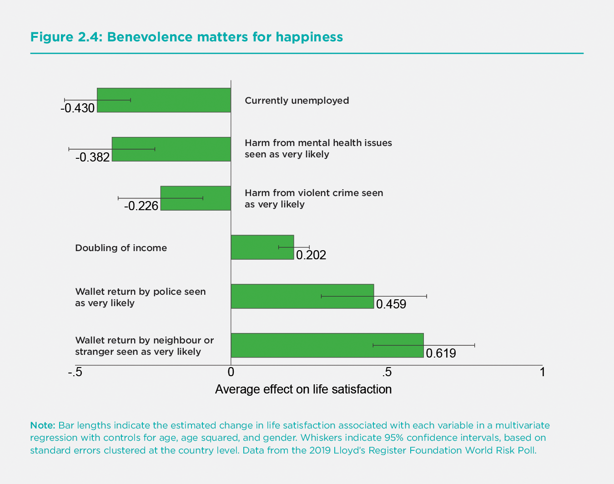
Bar lengths indicate the estimated change in life satisfaction associated with each variable in a multivariate regression with controls for age, age squared, and gender. Whiskers indicate 95% confidence intervals, based on standard errors clustered at the country level. Data from the 2019 Lloyd’s Register Foundation World Risk Poll.
Thus we find that a variety of trust and generosity measures remain extremely important supports for well-being. They may provide an important element in understanding why life evaluations have been as resilient in 2020 as previous sections have shown. In the next section, we ask whether these primary supports for happiness have also helped countries in their efforts to find and implement strategies to control COVID-19. We will carry forward our data on expected wallet return by neighbours and strangers as a measure of social capital that could, and does, supplement institutional trust (which includes trust in police as a component) in predicting a successful COVID-19 strategy.
How have countries done in the fight against COVID-19?
At the core of our interest in investigating international differences in death rates from COVID-19 is to see what links there may be between the variables that support high life evaluations and those that are related to success in keeping death rates low. We find that social and institutional trust are the only main determinants of subjective well-being that show a strong carry-forward into success in fighting COVID-19.[20]
This section seeks to explain international differences in national average COVID-19 deaths per 100,000 population in 2020. In 31 countries COVID-19 deaths were fewer than 1 per 100,000 population. These include countries as large as China and as small as New Zealand and Bhutan. This group with extremely low COVID-19 death rates contains 20 African countries and several Asian countries and regions that, like China, Bhutan and New Zealand, adopted policy strategies to drive community transmission to zero and keep it there, including Singapore, Taiwan, Cambodia, and Thailand.
At the other extreme, there were 11 countries with over 100 COVID-19 deaths per 100,000 population. These included the United States, the United Kingdom, Belgium, Italy, Spain, Czech Republic, Peru and five smaller European countries. The full list covering 163 countries is in the statistical appendix. Figure 2.5 shows the national death rates in 2020 on a global map revealing stark regional divides, with very low death rates in Asia, Africa, and Australasia, and the highest death rates in some European countries, the United States and parts of Latin America.
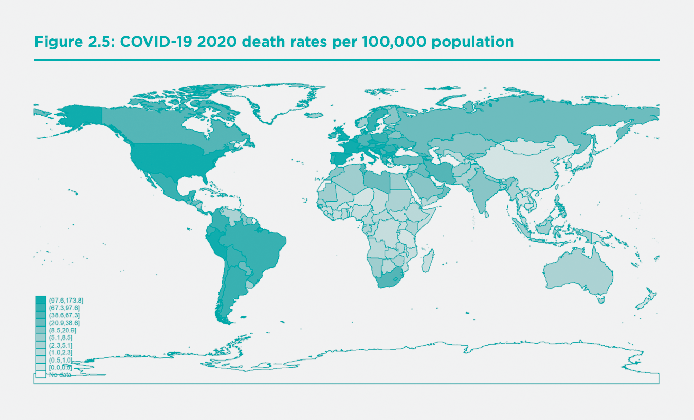
If we take a broad view of subjective well-being, we should consider, as is done in Chapter 8, extending our measure of national well-being to adjust for international differences in life expectancy. Chapter 8 proposes direct adjustment for the length of life in the measurement of national well-being. Doing so in the way suggested would increase the trend growth of national well-being where life expectancy has been improving, reflecting that in countries with greater life expectancy people have longer to enjoy being alive. It also strengthens the links between COVID-19 death rates and national well-being beyond their impact on the life evaluations of those still living.
In this section we try to estimate the extent to which the quality of the social context, which we have found so important to explaining life evaluations within and across societies, might help or hinder progress in fighting COVID-19. Several studies within nations have found that regions with high social capital have been more successful in reducing rates of infection and deaths.[21] Others have argued that different elements of the social context might have opposite effects in the fight against COVID-19.[22] In particular, it has been suggested that the close personal relations within families and communities that are sparked and fed by frequent in-person meetings, might provide a good transmission climate for the virus. On the other hand, those aspects of social capital relating to pro-social behaviour, trust in others, and especially trust in institutions might be expected to foster behaviours that would help a society to follow physical distancing and other rules designed to stop the spread of the virus. We capture these vital trust linkages in two ways. We have a direct measure of trust in public institutions, to be described below. We do not have a measure of general trust in others for our large sample of countries, so we make use instead of a measure of the inequality of income distribution, which has often been found to be a robust predictor of the level of social trust.[23]
Our attempts to explain international differences in COVID-19 death rates divide the explanatory variables into two sets, both of which refer to circumstances that are likely to have affected a country’s success in battling COVID-19. The first set of variables cover demographic, geographic and disease exposure circumstances at the beginning of the pandemic. The second set of variables covers several aspects of economic and social structure, also measured before the pandemic, that help to explain the differential success rates of national COVID-19 strategies.
The best strategy was to drive community transmission to zero, and to keep it there, thus saving lives and achieving more open societies and economies by late 2020. This is likely to make for happier societies in 2021 and beyond.
The first set of three variables comprises:
a) the median age of the population. This variable captures the fact that COVID-19 fatality rates are very high for the elderly and very low for the young. The median age captures both aspects of this differential fatality better than do measures of the share of the population above a certain age,[24] and almost as well as a more sophisticated adjustment based on age-standardized mortality rates for COVID-19.[25] There are big regional differences in the averages of national median ages, being highest in Europe at 42 years and less than 20 in Sub-Saharan Africa.
b) whether the country is an island. The island variable covers 21 island nations, augmented to 22 by treating Australia as an island rather than a continent. All 22 share the characteristic that access must be by air or sea, simplifying the application of measures to monitor and block virus movements.
c) an exposure index measuring how close a country was, in the early stages of the pandemic (March 31), to infections in other countries. It embodies the propinquity principle implicit in the law of gravity, and embodied in a variety of gravity-based models of trade,[26] migration,[27] and infections. [28] Distance matters, as does the size of the objects of interest, in this case the number of infections. In our application of the gravity principle, we treat early infections elsewhere to be a risk factor for future infections here, with transmission being less likely when physical distance is greater. We use geographic distance as a proxy for a range of additional factors - cultural, linguistic, climatic, and migration-based - that jointly determine the frequency of population movements, which in turn facilitate the spread of a virus. The variable used is the sum across partner countries of total early infections in each country divided by the distance[29] separating them. Our measure of the infection mass in each possible source country is based on infections early in the first wave of the pandemic (March 31), and distances are those between the capital cities of the exposed country and each of the possible source countries. For example, the observation for India is the sum across all other countries of their cumulative national infections by March 31 divided by the distance between that country and India. The exposure index ranges from a low of 0.4 to a high of almost 8, with an average value of 5.1. Australia and New Zealand are the only countries with exposure below 0.5, reflecting their great distance from countries with high infection rates at March 31. All of the eight countries with an exposure index above 5.0 are in Western Europe.
The second set of variables comprises:
a) a pair of measures of the extent to which a country was able to remember and apply the epidemic control strategies learned during the SARS epidemic of 2003. Countries in the WHO Western Pacific Region have been building on SARS experiences to develop fast and maintained virus suppression strategies.[30] Hence membership in that region (WHOWPR) defines one of our SARS variables. Being geographically close to countries with SARS experience may have accelerated the transmission of information about alternative COVID-19 suppression strategies. Our second SARS-related variable is the average distance between each country and each of the six countries or regions most heavily affected by SARS (China, Hong Kong, Canada, Vietnam, Singapore and Taiwan).
b) whether the country has a female head of government. Female heads of government (there are 23 in our sample) have tended to favour making policy with overall well-being as the objective, and this makes suppressing community transmission an even more obvious choice for them.
c) the level of institutional trust. We use the national average for 2017-2019 of institutional trust (on a scale from 0 to 1) as defined in Table 2.4 of World Happiness Report 2020. Confidence in public institutions supports the choice and successful application of a virus-suppression strategy because those living in societies with high institutional trust levels are more likely to accept the necessity of fast and sometimes painful policy measures. They may be more likely to follow official advice, and also to reach out to help others in their communities.
d) the Gini coefficient measuring the country’s degree of income inequality, on a scale from 0 to 100, with 0 representing complete equality. In our global sample of 163 countries, the lowest value is 23 and the highest 65, with an average of 38.
These variables together explain two-thirds of the international differences in COVID-19 death rates in our global sample of 163 countries, as shown in the second column of Table 2.6. The first column of the Table shows that the three geographic and demographic variables alone can explain almost one-half (48%) of the international differences in COVID-19 death rates in 2020.
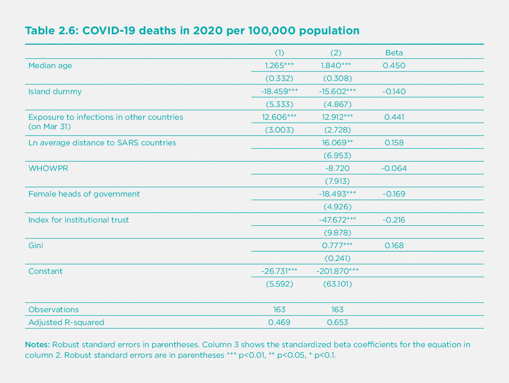
Although the more complete model of equation (2) still has a simple structure, we have tested, and report in Table A1 of Statistical Appendix 2, what happens if we augment our basic structure by adding other variables that have epidemiological or other grounds for inclusion. Of the 18 additional variables considered separately, six contribute significant explanatory power. More hospital beds were associated with a reduction of 3.3 deaths per 100,000 population for each additional bed per thousand population. We did not include the variable in our basic model because it did not affect the other results but materially reduced the number of countries covered. Three different trust variables made contributions, including social trust and expected return of a lost wallet if found by community members, whether strangers or neighbours. These all contributed explanatory power beyond that provided by our institutional trust measure and income inequality. Although these variables do not figure in our base model because of the smaller country coverage, their explanatory power strengthens our confidence in the importance of institutional and social trust in reducing COVID-19 fatalities. A variable covering the six countries in the East Asian region was associated with further reductions in fatalities in that region beyond those provided by the SARS-related variables in Table 2.6. As already noted, we leave the East Asia variable out of our base model to identify likely channels of influence. The reasons why these countries did even better than countries with similar SARS experience are considered in more detail in Chapters 3 and 4, with the tightness of their social norms being a suggested reason.[31] Finally, we found, and show as equation (18) in Table A1 of Appendix 2, that a more accurate adjustment for the interaction of age-specific mortality risks of COVID-19 with each country’s population age distribution produces a slightly tighter fitting equation than does the median age variable. Since it reduces the sample size and does not materially influence any of the other main coefficients of the model, we treat this result as a robustness check on our use of median age in the base model. These tests together give us confidence that a range of other possible variables do not alter the main results we discuss below.
First consider the three variables that set the context facing nations at the start of the pandemic, all of which affect their likely COVID-19 death rates. These relate to demography, geography and exposure. The first equation of Table 2.6, where three variables are the only ones used to explain death rates, increasing median age by one year is associated with 1.26 more deaths per 100,000 people. Therefore, moving from sub-Saharan median age to the European average is associated with 29 more COVID-19 deaths per hundred thousand population in 2020, thereby accounting for almost half of the actual death rate difference of 65 between the two regions. Using the more precise adjustment described in Statistical Appendix 2, the difference between the European and African age structures, when combined with the age structure of COVID-19 fatality rates, would predict at difference of 39 deaths per hundred thousand, two-thirds of the total difference.[32] Being an island nation, which makes population movements easier to control, is associated with 18 fewer deaths per 100,000 population. Finally, each 1 unit increase in the March 31 infection exposure index is associated with an additional 12.6 deaths per 100,000 people. Comparing a low-exposure country with an index of 1 to a high exposure country with an index of 5 would be associated with a death rate that is higher by 50 per 100,000 population. Actual death rates averaged 65 per 100,000 in Western Europe versus about 1 in East Asia. The difference predicted using the first equation in Table 2.6 would be 36. [33]
Next, we add a group of scientific, political and social variables to help explain the likelihood of a country finding and implementing a successful COVID-19 suppression strategy. The most successful overall strategy for minimizing death rates has been to drive community transmission to zero and keep it there. Instead, some governments chose to start reopening their economies before they had reduced community transmission to zero and established sufficient testing, tracing and isolation strategies to avoid subsequent surges in infection rates. These governments were assuming that they had found a reasonable trade-off between saving lives and saving the economy. However, the evidence is becoming clearer that there is no such trade-off when it comes to the basic strategy. As will be illustrated below and in Chapters 3 and 4, countries that chose to achieve and defend zero community transmission levels have generally done better on all fronts.
How do our policy-related variables fit in to help explain the likelihood of a successful strategy being chosen? The first two variables relate to scientific understanding, the next one to political leadership, and the final two to the underlying social and economic contexts.
Starting with the science, there is considerable evidence that countries in the front lines of the SARS epidemic in 2003 learned important lessons about the need for fast and effective response to novel viral threats. Our two SARS-related measures attempt to measure the likely flow of ideas and experience that helped some countries find and choose a successful virus suppression strategy. First, there is evidence that ideas,[34] like trade flows and viruses, transmit more readily when distances (geographic, cultural, linguistic, or political) are less. Our SARS distance variable finds that doubling a country’s geographic distance from the six countries with the greatest SARS experience is associated with a 2020 death rate higher by 16 per 100,000. However, there is some potential for SARS experience to have contributed to costly delays in recognizing the importance of transmission via aerosols and asymptomatic carriers, since neither of these crucial aspects was present in SARS. The key SARS lesson was not to expect another SARS, but to be prepared to act fast to halt virus transmission even while its characteristics were unknown.
Second, the World Health Organization’s Western Pacific Region has provided for many years a forum and a focal point for the development of pandemic strategies. The average COVID-19 death rate in 2020 was 1.52 per 100,000 population for the 14 WHOWPR countries[35] in our sample, compared to 33.4 for other countries. The estimated coefficient suggests that WHOWPR membership accounts for a difference of 9 deaths per 100,000, about a third of the total difference. This estimated effect is statistically insignificant because the WHOWPR variable is one of two SARS-related variables, and the two are quite closely correlated (r=-0.55). If either of the two variables is included without the other, it attracts a larger and highly significant coefficient.[36] We prefer to leave both in, since they each provide a plausible part of the knowledge transmission story.[37] We should also note, and report in the statistical appendix, that the two SARS variables are statistically dominated by an indicator variable for the East Asian countries that are the focus of Chapters 3 and 4. We choose not to use that variable here, since it risks being a description of the considerable differences to be explained rather than being, as we prefer, an attempt to explain them. But we recognize that we have thus far not provided a complete explanation.[38] Chapter 3 describes the timing and content of the policies that enabled those countries to achieve results even better than would be expected from their SARS experience and lessons.
Turning to political leadership, there are many specific examples where national leaders have strengthened or weakened the prospects for policy strategies aimed at minimizing COVID-19 deaths. We focus here on one objectively easy-to-measure characteristic of national leadership – whether the head of government is a man or a woman. Several of the 23 female heads of government have favoured making policy with overall well-being as the objective,[39] making the suppression of community transmission an even more obvious choice for them. Countries that rank highly on a range of social features likely to support a virus suppression strategy are also more likely to have chosen a female leader.[40] Having a female leader is associated with death rates lower by 19 per 100,000 population.
Confidence in public institutions supports the choice and successful application of the preferred strategy because those living in such societies are more likely to accept the necessity of fast and sometimes painful policy measures, and are personally more likely to follow policy advice and to reach out to help others in their communities. We use the same measure of confidence in public institutions that we used in Table 2.4 of World Happiness Report 2020. It is derived from the first principal component of several Gallup World Poll questions about confidence in various public institutions.[41] It has a global average of 0.3, and is highest in Southeast Asia (0.56) and lowest in Eastern Europe (0.20). The coefficient of -48 suggests that to have the level of institutional trust in Brazil (0.11) rather than Singapore (0.86) would be matched by COVID-19 death rates higher by 36 per 100,000. This is more than one-third of the actual difference in deaths, which were fewer than 1 per 100,000 in Singapore and 92 in Brazil.
We do not have a full global sample measure for social trust, so we use income inequality as a strong proxy variable because social trust is generally lower in countries where income inequality is higher.[42] We have previously found[43] that inequality of subjective well-being is an even stronger predictor of social trust. We find here that income inequality is more predictive than is happiness inequality as a factor limiting the population’s ability or willingness to follow COVID-19 virus-suppression guidelines. There is some early evidence[44] of empirical linkages between income inequality and COVID-19 death rates, supported by pre-COVID evidence of links between income inequality and health[45] beyond those flowing through social trust. There is also evidence from within countries[46] that various COVID-19 impacts are worse for those with relatively low incomes, and this might have a counterpart in cross-country analysis. Hence, we are not surprised to find inequality of income to be a stronger predictor of COVID-19 death rates than is well-being inequality. The coefficient of 0.78 suggests than to move from a country with a Gini coefficient of 27 (like Denmark or Sweden) to 47 (like Mexico or the United States) is associated with COVID-19 death rates higher by 16 per 100,000 population.
Another powerful measure of social capital is the expected rate of wallet return if found by a stranger or a neighbour. Equation (16) in Appendix Table A2 shows that adding that measure of community benevolence has a large impact on lives saved, above and beyond that explained by the main institutional trust variable. A country where wallet return is seen as very likely, when compared to a country where such return is seen as very unlikely, is estimated to have had almost 50 fewer deaths per 100,000 population, about as large an effect as provided by institutional trust on its own.[47] We do not use the wallet return variable as part of our base model, because of the smaller number of countries covered. It nevertheless provides important evidence that strong benevolent community connections and trusted public institutions are both crucial supports for successful COVID-19 strategies. The model including all three trust-related variables – institutional trust, community wallet return, and income inequality, suggests that the trust differences between Finland and Mexico could explain a difference of 41 deaths per 100,000 in 2020, almost half of the total difference between the two countries. COVID-19 deaths in 2020 were 10.1 per 100,000 in Finland compared to 97.6 in Mexico.[48]
The fact that experts and governments in countries distant from the earlier SARS epidemics did not get the message faster about the best COVID-19 response strategy provides eloquent testimony to the power of a “won’t happen here” mindset, vividly illustrated by the death rate impacts of distance from SARS countries and membership of the Western Pacific Region of the WHO.[49] There was very early evidence that COVID-19 was highly infectious, spread by asymptomatic[50] and pre-symptomatic[51] carriers, and subject to aerosol transmission.[52] These characteristics require masks[53] and physical distancing to slow transmission, rapid and widespread testing[54] to identify and eliminate community[55] outbreaks, and effective testing and isolation for those needing to move from one community or country to another. As shown in Chapter 3,[56] countries that quickly adopted all these pillar policies were able to drive community transmission to zero. By doing so, and then using widespread testing and targeted lockdowns when faced with fresh outbreaks, those countries were able to avoid the high levels of community exposure that have been responsible for subsequent waves that have in many countries been even more deadly than the first. Countries that did not drive their community transmission to zero almost always found themselves with insufficient testing, tracking and tracing capacities to stop subsequent waves of infection. They also made the infection risks worse for everyone by providing large community pools of infection that provided more scope for mutations to develop and spread. Hence it was unsurprising that the first new variants appear to have come from countries (the United Kingdom, South Africa, and Brazil)[57] with widespread community transmission of the original virus.
Although it still remains something of a mystery why what seem to be obvious lessons were so slow to be learned, our policy-related variables each pick up possible parts of the story. The three building blocks include ready access to good examples, effective leadership capable of acting quickly and appropriately, and a receptive society.
Taken together, our measures of risks of infection and policy supports combine to explain two-thirds of the differences in death rates among countries. Countries with death rates much higher than the model predicts, as shown in Table A2 of statistical appendix 2 and graphically here, were sometimes places where there was scepticism at the highest political level about the severity of the virus (e.g. Brazil, United States). In some other jurisdictions where actual deaths exceed predicted values there was a shared view by governments and health authorities that there was a trade-off to be exploited between virus suppression and the overall health of the economy and society (e.g. Sweden, United Kingdom).
There is a special group of countries where actual death rates were bounded at zero while the model predicts values below zero. Think of this as representing an exam, where the highest possible mark is 100%, but some students had more than enough knowledge and beneficial circumstances to achieve 100%. Our model adds up the factors adding to their likely success, which were clearly more than enough to keep their death rates close to zero. These countries include some African nations with young populations far removed from major centres of infection. It also includes several countries that were among the earliest and most effective adopters of an infection elimination strategy, including Bhutan, New Zealand, Singapore and Laos. Bhutan is an especially relevant case in making explicit use of the principles of Gross National Happiness in mobilizing the whole population in collaborative efforts to avoid even a single death from COVID-19 in 2020, despite having strong international travel links.[58]
Another notable group of countries are those whose exposure and other factors suggested large expected death rates, but which were able to achieve very low death rates. Examples include South Korea, Hong Kong, Japan and China and Taiwan in East Asia and Iceland, Norway and Finland in Europe. At the end of 2020, which marks the cut-off for the data we are considering in this report, neither the health effects nor the economic and social consequences of COVID-19 are finished, so it is premature to make final judgments as to whether those countries that did not choose to suppress community transmission were able to deliver economic or social benefits to support their more open strategies.
The evidence from 2020 suggests strongly that countries that gave priority to suppressing transmission have also managed to achieve better results in the economic and social dimensions. Both globally and within each region, where disease risk and exposure are more comparable, the countries that kept their COVID-19 death rates low have also achieved better economic performance, as measured by preliminary estimates of 2020 GDP compared to that in 2019. We have already seen that COVID-19 death rates were far higher in Western Europe than in East Asia. But there was no offsetting gain on the economic front, as GDP in 2020 is estimated to have shrunk by 1.3% in East Asia compared to a 6.5% decline in Western Europe.
Moving into 2021, those countries with low death rates have managed to reopen successfully, while the high death rate countries have continued to face unhappy combinations of fatalities and lockdowns. As further evidence of the continued applicability of our results, we have re-estimated our base model using death rates up to the end of February 2021, and find that it fits even more tightly now.[59]
It is useful to compare New Zealand with Sweden, since both have high social capital and institutional trust. In both countries COVID-19 strategies were developed with the full collaboration of governments and health authorities. Both countries are always in the top group of countries ranked by happiness, and both had citizen trust levels high enough to support a wide range of COVID-19 strategies. They chose very different routes right from the outset. New Zealand chose to take community transmission to zero and keep it there, while Sweden[60] preferred instead to keep its society and economy open. COVID-19 death rates in 2020 averaged 86.4 per 100,000 population in Sweden compared to 0.5 in New Zealand. By early 2021, a comparison of the two countries' openness showed them to be equally open on six of ten indicators. New Zealand was one step more open on three indicators – non-essential businesses, school and youth activities, and social gatherings – and less open only for cross-border travel.[61] And being an island was not an essential part of the story, as a comparison between Sweden and its Nordic neighbors Norway, Finland and Denmark makes clear. Their COVID-19 strategy was more akin to that of New Zealand than of Sweden, and their death rates as fraction as large. For example, Norway’s COVID-19 death rate was less than one-tenth as great as large as that of Sweden, its economy shrunk less in 2020, and at the beginning of 2021 it was equally or more open[62] on all measures except border controls. Both countries had their Gallup World Poll surveys centred in April 2020, and showed similar small drops in life evaluations and worse emotions when compared to 2019.[63] It is to be expected that further evidence from 2021 will support the conclusions reached here, that driving community transmission to zero and keeping it there has been better for all the pillars supporting happy lives: good health, good jobs, and a society where people can connect easily with each other in mutual trust and support.
Summary
This has been a challenging year for the world, and for the preparation of the World Happiness Report. Millions of lives have been lost, and billions of others shaken to their core. COVID-19 has altered how people live, how they think about life, and even how surveys can be used to assess these consequences. Many strands of data have been pieced together to produce a picture of almost astonishing resilience. This general pattern shows up in a number of different large-sample surveys with different timing and sampling methods, so we have some confidence that the pattern is there, especially as the surveys taken more frequently match the pandemic stages and severity appropriately. Who are we most likely to be missing? The surveys employed to measure happiness cannot be taken within many of the hardest-hit groups, including those living in elder-care, prisons, hospitals, refugee camps, and on the streets. But they can still represent the vast majority of the world’s population, including rich and poor, healthy and sick, employed and unemployed, living in very supportive or very divided communities and countries. Although there were significant increases in average sadness and worry, we found that overall life evaluations, and happiness rankings, were surprising stable. The top countries before the pandemic remained the top countries in 2020, so there is little change in the overall rankings. The top countries already had higher levels of trust and lower levels of inequality, both of which helped them to keep death rates low and social cohesion high, and hence to maintain their favourable positions.
As we go to press in early March of 2021, the pandemic is still far from over, and our conclusions about happiness during COVID-19 must remain tentative. We found for 2020 that the same six factors supporting well-being (income, health, someone to count on, freedom, generosity, and trust) continue to do so in almost exactly the same way as in previous years, and our measures of support have also been generally maintained. People were just as likely to have someone to count on, even though the ways in which this support is delivered have been upended. People have not toured the world, but many have rediscovered their neighbourhoods. Respondents over 60 years of age were in 2020 significantly less likely than in earlier years to report having health problems, despite being the age group most at risk from COVID-19. They were also the group showing a significant increase in having someone to count on in times of trouble, suggesting that, at least for them, neighbours and Zoom calls were filling in for the face-to-face contacts being put on hold.
Trust has been the key common factor linking happiness and COVID-19 control.
We looked for differences in COVID-19 happiness effects by gender and age. We found no significant gender differences, as in our global sample females retained their advantage in life satisfaction, and greater frequency of both positive and negative emotions. The well-being of those over 60 rose significantly relative to the middle age group. while in some countries, but not for the global sample as a whole, the young lost their advantage. In some regions, but not for the world as a whole, we found a significant reduction in the average life evaluations of the foreign-born. We found no significant changes in the inequality of well-being within the surveyed populations.
Trust was shown to be the key factor linking happiness and COVID-19. Of all the six factors supporting happiness, only trust played an equally strong role in helping countries to find and implement successful COVID-19 strategies. It was shown to be as important as ever in supporting happiness during the pandemic, and was found to be even more important when COVID-19 required the whole structure of private and public lives to be refocused on fighting the pandemic. Societies with higher trust in public institutions and greater income equality were shown to be more successful in fighting COVID-19, as measured by 2020 rates of COVID-19 deaths. Death rates differed, as expected, by population age structure and geography, being lower in young populations and on islands, and for countries less exposed to early infections nearby. The most successful strategy was shown to be to drive community transmission to zero, and to keep it there. Countries that did so saved lives and achieved more open societies and economies at the end of 2020. This is likely to help them to be happier societies in 2021 and beyond.
Countries with experience from the SARS epidemic seemed to have absorbed the relevant lessons, as did countries with female leaders. Countries with less inequality of income also had significantly lower death rates from COVID-19. This is partly because high social trust tends to go along with less income inequality. The economically disadvantaged in many countries faced the greatest chances of illness and death from COVID-19. The countries that chose to control the pandemic showed no trade-off between a healthy economy and a healthy population. On average, those countries with lower deaths rates had lower drops or bigger gains in expected 2020 growth rates for GDP (r=-.36). In 2021, the advantages of virus control look to be even larger, as many of the less controlled countries are still facing high case counts and death rates coupled with deep restrictions on economic and social life.
References
Aknin, L. B., Dunn, E. W., & Norton, M. I. (2011). Happiness runs in a circular motion: Evidence for a positive feedback loop between prosocial spending and happiness. Journal of Happiness Studies, 13(2), 347-355.
Aldrich, D. P. (2011). The externalities of strong social capital: Post-tsunami recovery in Southeast India. Journal of Civil Society, 7(1), 81–99.
Asadi, S., Bouvier, N., Wexler, A. S., & Ristenpart, W. D. (2020). The coronavirus pandemic and aerosols: does COVID-19 transmit via expiratory particles? https://www.tandfonline.com/doi/full/10.1080/02786826.2020.1749229
Bartscher, A. K., Seitz, S., Slotwinski, M., Siegloch, S., & Wehrhöfer, N. (2020). Social capital and the spread of Covid-19: insights from European countries. CESifo Working Paper 8346. https://www.cesifo.org/DocDL/cesifo1_wp8346.pdf
Bilalić, M., & McLeod, P. (2014). Why good thoughts block better ones. Scientific American, 310(3), 74-79.
Blundell, R., Costa Dias, M., Joyce, R., & Xu, X. (2020). COVID‐19 and Inequalities. Fiscal Studies, 41(2), 291-319.
Borgonovi, F., & Andrieu, E. (2020). Bowling together by bowling alone: social capital and Covid-19. Social science & medicine, 265, 113501.
Cheng, T. C., Kim, S., & Koh, K. (2020). The impact of COVID-19 on subjective well-being: Evidence from Singapore. IZA Discussion Paper 13702. https://www.econstor.eu/bitstream/10419/227229/1/dp13702.pdf
Chernozhukov, V., Kasahara, H., & Schrimpf, P. (2021). Causal impact of masks, policies, behavior on early covid-19 pandemic in the US. Journal of Econometrics, 220(1), 23-62.
Claeson, M., & Hanson, S. (2021). COVID-19 and the Swedish enigma. The Lancet, 397(10271), 259-261.
Cohn, A., Maréchal, M. A., Tannenbaum, D., & Zünd, C. L. (2019). Civic honesty around the globe. Science, 365(6448), 70-73. https://science.sciencemag.org/content/365/6448/70
Coscieme, L., Fioramonti, L., Mortensen, L. F., Pickett, K. E., Kubiszewski, I., Lovins, H., .… & Wilkinson, R. (2020). Women in power: female leadership and public health outcomes during the COVID-19 pandemic. MedRxiv. Doi: https://doi.org/10.1101/2020.07.13.20152397
Daoust, J. F. (2020). Elderly people and responses to COVID-19 in 27 Countries. PloS ONE, 15(7), e0235590. https://journals.plos.org/plosone/article?id=10.1371/journal.pone.0235590
Dussaillant, F., & Guzmán, E. (2014). Trust via disasters: The case of Chile’s 2010 earthquake. Disasters, 38(4), 808-832.
Demenech, L. M., Dumith, S. D. C., Vieira, M. E. C. D., & Neiva-Silva, L. (2020). Income inequality and risk of infection and death by COVID-19 in Brazil. Revista Brasileira de Epidemiologia, 23, e200095.
Elgar, F. J., Stefaniak, A., & Wohl, M. J. (2020). The trouble with trust: Time-series analysis of social capital, income inequality, and COVID-19 deaths in 84 countries. Social Science & Medicine, 263, 113365. https://doi.org/10.1016/j.socscimed.2020.113365
Emery, J. C., Russell, T. W., Liu, Y., Hellewell, J., Pearson, C. A., Knight, G. M., … & Houben, R. M. (2020). The contribution of asymptomatic SARS-CoV-2 infections to transmission on the Diamond Princess cruise ship. Elife, 9, e58699.
EU Open Data Portal (2020) Eurobarometer 93 Summer 2020 https://data.europa.eu/euodp/en/data/dataset/S2262_93_1_93_1_ENG
Fraser, T., & Aldrich, D. P. (2020). Social ties, mobility, and covid-19 spread in Japan. https://assets.researchsquare.com/files/rs-34517/v1/07ba6a97-bafb-44fc-979a-4c4e06519d56.pdf
Fraser, T., Aldrich, D. P., & Page-Tan, C. (2020). Bowling alone or masking together? The role of social capital in excess death rates from COVID19 (December 7, 2020). Available at SSRN: https://ssrn.com/abstract=3744251
Gandhi, M., Yokoe, D. S., & Havlir, D. V. (2020). Asymptomatic transmission, the Achilles’ heel of current strategies to control COVID-19. The New England journal of medicine. April 24 Editorial., 2158-2160.
Gelfand, M. J., Jackson, J. C., Pan, X., Nau, D., Pieper, D., Denison, E., .… & Wang, M. (2021). The relationship between cultural tightness–looseness and COVID-19 cases and deaths: a global analysis. The Lancet planetary health. https://www.thelancet.com/journals/lanplh/article/PIIS2542-5196(20)30301-6/fulltext
Godri Pollitt, K. J., Peccia, J., Ko, A. I., Kaminski, N., Dela Cruz, C. S., Nebert, D. W., .… & Vasiliou, V. (2020). COVID-19 vulnerability: the potential impact of genetic susceptibility and airborne transmission. Human genomics, 14, 1-7.
Goff, L., Helliwell, J. F., & Mayraz, G. (2018). Inequality of subjective well‐being as a comprehensive measure of inequality. Economic Inquiry, 56(4), 2177-2194.
Head, K., & Mayer, T. (2014). Gravity equations: workhorse, toolkit, and cookbook. In G. Gopinath, E. Helpman, & K. Rogoff (eds.). Handbook of international economics (Vol. 4, pp. 131-195). Elsevier.
Helliwell, J. F., & Wang, S. (2011). Trust and well-being. International Journal of Wellbeing, 1(1), 42-78.
Helliwell, J. F., Aknin, L. B., Shiplett, H., Huang, H., & Wang, S. (2018). Social capital and prosocial behavior as sources of well-being. In E. Diener, S. Oishi, & L. Tay (Eds.), Handbook of well-being. Salt Lake City, UT: DEF Publishers. DOI:nobascholar.co
Helliwell, J. F., Shiplett, H., & Bonikowska, A. (2020). Migration as a test of the happiness set‐point hypothesis: Evidence from immigration to Canada and the United Kingdom. Canadian journal of economics/Revue canadienne d'économique.
Heuveline, P., & Tzen, M. (2020). Beyond deaths per capita: three CoViD-19 mortality indicators for temporal and international comparisons. MedRxiv.
Kang, S. H., & Skidmore, M. (2018). The effects of natural disasters on social trust: Evidence from South Korea. Sustainability, 10(9), 2973.
Knack, S. (2001). Trust, associational life and economic performance. In J. F. Helliwell (Ed.), The Contribution of Human and Social Capital to Sustained Economic Growth and Well-Being. Quebec: Human Resources Development.
Kushlev, K., Proulx, J. D., & Dunn, E. W. (2017). Digitally connected, socially disconnected: The effects of relying on technology rather than other people. Computers in Human Behavior, 76, 68-74.
Lau, P. Y. F. (2020). Fighting COVID-19: Social capital and community mobilisation in Hong Kong. International Journal of Sociology and Social Policy. 40(9–10), 1059–1067.
Lavezzo, E., Franchin, E., Ciavarella, C., Cuomo-Dannenburg, G., Barzon, L., Del Vecchio, C., .… & Abate, D. (2020). Suppression of a SARS-CoV-2 outbreak in the Italian municipality of Vo’. Nature, 584(7821), 425-429.
Li, R., Pei, S., Chen, B., Song, Y., Zhang, T., Yang, W., & Shaman, J. (2020). Substantial undocumented infection facilitates the rapid dissemination of novel coronavirus (SARS-CoV-2). Science, 368(6490), 489-493. https://science.sciencemag.org/content/368/6490/489.abstra
Liotta, G., Marazzi, M. C., Orlando, S., & Palombi, L. (2020). Is social connectedness a risk factor for the spreading of COVID-19 among older adults? The Italian paradox. Plos one, 15(5), e0233329. https://journals.plos.org/plosone/article?id=10.1371/journal.pone.0233329
Louie, J. K., Scott, H. M., DuBois, A., Sturtz, N., Lu, W., Stoltey, J., .… & Bobba, N. (2020). Lessons from mass-testing for COVID-19 in long term care facilities for the elderly in San Francisco. Clinical Infectious Diseases.
Mahase, E. (2021) Covid-19: What new variants are emerging and how are they being investigated? BMJ 2021;372:158 http://dx.doi.org/10.1136/bmj.n158
Mayer, T., & Zignago, S. (2005). Market access in global and regional trade. CEPII Working Paper 2005–02.
Mayer, T., & Zignago, S. (2011). Notes on CEPII’s distances measures: The GeoDist database. CEPII Working Paper 2011–25. http://www.cepii.fr/PDF_PUB/wp/2011/wp2011-25.pdf
Miyazawa, D., & Kaneko, G. (2020). Face mask wearing rate predicts country's COVID-19 death rates. medRxiv.
Moghadas, S. M., Fitzpatrick, M. C., Sah, P., Pandey, A., Shoukat, A., Singer, B. H., & Galvani, A. P. (2020). The implications of silent transmission for the control of COVID-19 outbreaks. Proceedings of the National Academy of Sciences, 117(30), 17513-17515. https://www.pnas.org/content/pnas/117/30/17513.full.pdf
O’Donnell, A., Wilson, L., Bosch, J. A., & Borrows, R. (2020). Life satisfaction and happiness in patients shielding from the COVID-19 global pandemic: A randomised controlled study of the ‘mood as information’ theory. PloS one, 15(12), e0243278.
Office for National Statistics (2021a) Quarterly estimates of personal well-being in the UK: April 2011 to September 2020. https://www.ons.gov.uk/releases/quarterlyestimatesofpersonalwellbeingintheukapril2011toseptember2020
Office for National Statistics (2021b) Data collection changes due to the pandemic and their impact on estimating personal well-being. https://www.ons.gov.uk/peoplepopulationandcommunity/wellbeing/methodologies/datacollectionchangesduetothepandemicandtheirimpactonestimatingpersonalwellbeing#mode-effects-on-personal-well-being-estimates
Ongmo, S., & Parikh, T. (2020) What explains Bhutan’s success in battling COVID-19?’ The Diplomat May 8, 2020. https://thediplomat.com/2020/05/what-explains-bhutans-success-battling-covid-19/
Ollila, H. M., Partinen, M., Koskela, J., Savolainen, R., Rotkirch, A., & Laine, L. T. (2020). Face masks prevent transmission of respiratory diseases: a meta-analysis of randomized controlled trials. medRxiv.
Oronce, C. I. A., Scannell, C. A., Kawachi, I., & Tsugawa, Y. (2020). Association between state-level income inequality and COVID-19 cases and mortality in the USA. Journal of General Internal Medicine, 35(9), 2791-2793.
Perona, M., & Senik, C. (2020) *Le Bien-etre en France: Rapport 2020.*Paris: CEPREMAP. http://www.cepremap.fr/depot/2021/01/Le-Bien-etre-en-France----Rapport-2020.pdf
Pew Research Center (2020). Most Approve of National Response to COVID-19 in 14 Advanced Economies. August 2020. https://www.pewresearch.org/global/2020/08/27/most-approve-of-national-response-to-covid-19-in-14-advanced-economies/
Pickett, K. E., & Wilkinson, R. G. (2015). Income inequality and health: a causal review. Social science & medicine, 128, 316-326.
Poot, J., Alimi, O., Cameron, M. P., & Maré, D. C. (2016). The gravity model of migration: the successful comeback of an ageing superstar in regional science.
Investigaciones Regionales - Journal of Regional Research, 36, 63-86.
Rosella, L. C., Wilson, K., Crowcroft, N. S., Chu, A., Upshur, R., Willison, D., .… & Goel, V. (2013). Pandemic H1N1 in Canada and the use of evidence in developing public health policies–a policy analysis. Social Science & Medicine, 83, 1-9.
Rothstein, B., & Uslaner, E. M. (2005). All for all: Equality, corruption, and social trust. World Pol., 58, 41.
Savvides, C., & Siegel, R. (2020). Asymptomatic and presymptomatic transmission of SARS-CoV-2: A systematic review. medRxiv. Doi: 10.1101/2020.06.11.20129072
Setti, L., Passarini, F., De Gennaro, G., Barbieri, P., Perrone, M. G., Borelli, M., .… & Miani, A. (2020). Airborne transmission route of COVID-19: why 2 meters/6 feet of inter-personal distance could not be enough. International journal of environmental research and public health, 17(8), 2932.
Sin, I. (2018). The gravity of ideas: How distance affects translations. The Economic Journal, 128(615), 2895-2932. https://doi.org/10.1111/ecoj.12537
Soroka, S., Helliwell, J. F., & Johnston, R. (2003). Measuring and modelling trust. Diversity, social capital and the welfare state, 279-303.
St-Pierre, M., & Béland, Y. (2004, August). Mode effects in the Canadian Community Health Survey: A comparison of CAPI and CATI. In Proceedings of the Annual Meeting of the American Statistical Association, Survey Research Methods Section, August 2004.
Tan, T. H. Y., Toh, M. P. H. S., Vasoo, S., Lye, D. C. B., Ang, B. S. P., Leo, Y. S., .… & Kurup, A. (2020). Coronavirus Disease 2019 (COVID-19): The Singapore Experience. A Review of the First Eight Months. Annals of the Academy of Medicine, Singapore, 49(10), 764-778.
Toya, H., & Skidmore, M. (2014). Do natural disasters enhance societal trust?. Kyklos, 67(2), 255-279.
Wang, J., & Du, G. (2020). COVID-19 may transmit through aerosol. Irish Journal of Medical Science (1971-), 1-2.
Wei, W. E., Li, Z., Chiew, C. J., Yong, S. E., Toh, M. P., & Lee, V. J. (2020). Presymptomatic Transmission of SARS-CoV-2—Singapore, January 23–March 16, 2020. Morbidity and Mortality Weekly Report, 69(14), 411.
World Health Organization (2017) Asia Pacific strategy for emerging diseases and public health emergencies (APSED III): advancing implementation of the International Health Regulations (2005): working together towards health security https://iris.wpro.who.int/bitstream/handle/10665.1/13654/9789290618171-eng.pdf
Wu, C. (2021). Social capital and COVID-19: a multidimensional and multilevel approach. Chinese Sociological Review, 53(1), 27–54. https://www.tandfonline.com/doi/pdf/10.1080/21620555.2020.1814139
Xia, Y., Bjørnstad, O. N., & Grenfell, B. T. (2004). Measles metapopulation dynamics: a gravity model for epidemiological coupling and dynamics. The American Naturalist, 164(2), 267-281.
Yamamura, E., Tsutsui, Y., Yamane, C., Yamane, S., & Powdthavee, N. (2015). Trust and happiness: Comparative study before and after the Great East Japan Earthquake. Social Indicators Research, 123(3), 919–935.
Yu, X., & Yang, R. (2020). COVID‐19 transmission through asymptomatic carriers is a challenge to containment. Influenza and other respiratory viruses, 14(4), 474-475.
Endnotes
See ONS (2021b). For earlier evidence, see St-Pierre & Béland (2004), where telephone respondents gave lower answers for self-assessed obesity, smoking, and ever driving after two drinks, similar to findings in other mode-effect studies. But the answers to the physical and mental health questions (on a multi-point scale) were the same whether asked in person or by telephone. ↩︎
We adjust the original Gallup sample weights to ensure equal weights across countries/territories in a year. ↩︎
See Office for National Statistics (2021a). ↩︎
See Recchi et al. (2020) and Perona and Senik (2020). ↩︎
See several chapters of World Happiness Report 2018, and Helliwell, Shiplett and Bonikowska (2020). ↩︎
This is consistent with panel evidence from Singapore, where although a number of satisfaction measures decreased during lockdown, there was an increase in satisfaction with health. See Cheng et al. (2020). ↩︎
See several references in the next section, especially Fraser and Aldrich (2020) and Bartscher et al. (2020). ↩︎
See Helliwell et al. (2018) and Table 2.3 in Chapter 2 of WHR 2020. ↩︎
See Aldrich (2011). ↩︎
See Yamamura et al. (2015) and Dussaillant and Guzmán (2014). ↩︎
See Toya and Skidmore (2014) and Dussaillant and Guzmán (2014). ↩︎
See Kang and Skidmore (2018). ↩︎
For the logic and first use of the wallet questions, see Soroka et al. (2003). To make the question of equal applicability in countries where wallets or their equivalent are not normally used, the Gallup World Poll version refers to an object of great personal value, with name and address attached. ↩︎
See Aknin et al. (2011). ↩︎
See Knack (2001) and Helliwell and Wang (2011). ↩︎
Cohn et al (2019). The researchers were surprised to find the rates of return of the wallets with money included are even higher than if there was no money. ↩︎
To obtain an index of expected wallet return in the Lloyd’s data, the three possible responses: very likely, somewhat likely, and very unlikely were coded at 1.0, 0.50, and zero. ↩︎
Life evaluations for those who think it highly likely a wallet will be returned whether found by police, a neighbour, or a stranger are estimated to be 1.094 points higher on a 0-10 scale (t=8.4). This is based on a micro regression for the Cantril ladder using the Gallup World Poll data for the 2019 survey wave in which the wallet question was included. Income, unemployment, age, education, gender, and marital status were included as controls. ↩︎
The other risks asked about in the same personal harm answer format included personal harm from food, water, severe weather, powerlines and appliances. ↩︎
For example, if we regress 2020 COVID-19 death rates on the 2017-2019 national averages of the main variables used in Table 2.3 to support life evaluations and emotions, only institutional trust has a significant effect of the correct sign (-92, t=4.2). The log of GDP per capita is the only other significant variable, and it shows that higher income countries have generally had higher COVID-19 death rates. ↩︎
Fraser and Aldrich (2020), looking across Japanese prefectures, found that those with greater social connections initially had higher rates of infection, but as time passed they had lower rates. Bartscher et al (2020) use within-country variations in social capital in several European countries to show that regions with higher social capital had fewer COVID-19 cases per capita. Wu (2021) finds that trust and norms are important in influencing COVID-19 responses at the individual level, while in authoritarian contexts compliance depends more on trust in political institutions and less on interpersonal trust. ↩︎
Elgar et al. (2020). ↩︎
See Rothstein and Uslaner (2005). ↩︎
See Statistical Appendix 2 for a comparison with ways of linking demography to COVID-19 fatalities. ↩︎
This alternative mortality risk variable is the ratio of an indirectly standardized death rate to the crude death rate for each of 54 countries. The indirect standardization is based on interacting the US age-sex mortality pattern for COVID-19 with each country’s overall death rate and its population age and sex composition. Use of this variable adjusts, in a more precise way than does the median age, for the COVID-19 mortality implications of each country’s population distribution by age and gender. Data from Heuveline and Tzen (2020). ↩︎
Well-surveyed by Head and Mayer (2014). ↩︎
See Poot et al. (2016). ↩︎
See Xia et al. (2004) for an early application of a gravity-based modelling of infection risk for explaining within-country transmission of measles. There have been subsequent further applications of the gravity model to help explain the spatial transmission of disease. ↩︎
The bilateral distances are taken from the GeoDist Database provided by CEPII. The GeoDist was developed in Mayer and Zignago (2005) to analyze market access in global and regional trade flows. Detailed explanations of the distance measures can also be found in Mayer and Zignago (2011). ↩︎
See World Health Organization (2017). ↩︎
See Gelfand et al. (2021). ↩︎
The age/mortality adjustment variable takes the value of 0.85 in Western Europe, and 5.18 in Sub-Saharan Africa. Based on a sample of 154 countries, the estimated coefficient on the index is 9.23, as shown in equation 18 of Table A1 in Statistical Appendix 2. The age structure difference between the two regions predicts a 4.23*9.23=39.0 difference in COVID-19 death rates. ↩︎
To consider the possibility that the exposure variable perhaps gives too much credit for infections that could have been stopped, we constructed an alternative exposure index that depended only on factors that influence the spread on the disease but do not depend on a country’s policy strategy. These were the distance from China, a country’s remoteness from all other countries, and whether a country was in the Schengen group of European countries that had abolished border controls for population movements within the Schengen zone. The predicted exposure index was lower for countries further from China, lower for countries far from other centres of population, and higher for countries in the Schengen zone. This alternative did not significantly change the predicted gap between Europe and East Asia, but worsened the overall fit of the model, since it ignored the actual spread of the virus. So we continue to use the exposure index based on the actual virus spread by March 31. ↩︎
See Sin (2018). ↩︎
We include Hong Kong SAR and Taiwan as part of our WHOWPR group of countries, even though they are not official members, because both were heavily affected by SARS. ↩︎
Using just WHOWPR, the coefficient is 19.4 (t=2.7, p=0.008), while on its own the SARS distance variable takes a coefficient of -19.6 (t=3.5, p=0.001). Combining the two variables into one, as supported by the equality of their coefficients, gives an even more significant coefficient, 13.0 (t=3.6, p<0.001). Most of the explanatory power is coming from the SARS distance variable. ↩︎
We also found that WHOWPR membership was even more important in explaining international differences in infection rates. ↩︎
2020 death rates averaged 1.1 per 100,000 in the six East Asian countries (China, Taiwan, Hong Kong, Japan, South Korea and Mongolia) and 31.8 in the rest of the world. ↩︎
There was a meeting of well-being leaders in Reykjavik, with Iceland hosting New Zealand and Finland, all three countries having female heads of government. ↩︎
Evidence for both parts of this linkage is provided by Coscieme et al. (2020). ↩︎
To get our binary measure, we start by taking the first principal component of the following five measures: confidence in the national government, confidence in the judicial system and courts, confidence in the honesty of elections, confidence in the local police force, and perceived corruption in business. This principal component is then used to create the binary measure using the 75^th^ percentile as the cutoff point. ↩︎
See Rothstein and Uslaner (2005). ↩︎
See Goff et al. (2018). ↩︎
See Elgar et al. (2020) using data for a smaller sample of countries. ↩︎
See Pickett and Wilkinson (2015). ↩︎
See Blundell et al. (2020) for UK evidence, Demenech et al. (2020) for Brazil, and Oronce et al. (2020) for the United States. ↩︎
Adding the community wallet return variable to equation (2) in Table 2.6 lowers the coefficient slightly on institutional quality, to 42.0, and the coefficient on the Gini index from 0.77 to 0.73, as shown in equation (16) in Appendix 2 Table A1. Note the sample size is smaller in equation (16). The combined effects of the wallet variable and institutional quality in the equation where both appear are 42+49=92 deaths per 100,000 for what would be an impossibly large increase from 0 to 1 in both variables. Actual country-based calculations are shown in the text and matching end-note. ↩︎
The contributions were 0.734*(47.5-25.9)=15.85 for the Gini, 41.95*(0.55-0.129)=17.7 for institutional trust, and 49.0*(0.645-0.285)=17.6 for community wallet return, making a total of 51.2. Coefficients are from equation (16) in Table A1 in Statistical Appendix 2, and the values of the variables from the on-line datafile. ↩︎
There is experimental evidence that chess players at all levels of expertise are subject to the Einstellung (or set-point) effect, which limits their search for better solutions. The implications extend far beyond chess. See Bilalić and McLeod (2014). See also Rosella et al. (2013). ↩︎
See Emery et al. (2020), Gandi et al. (2020), Li et al. (2020), Savvides et al. (2020) and Yu and Yang (2020). ↩︎
See Wei et al. (2020) and Savvides et al. (2020). ↩︎
See, for examples, Assadi et al. (2020), Setti et al. (2020), Godri Pollitt et al. (2020), and Wang & Du (2020). ↩︎
See Chernozhukov et al. (2021) for causal estimates from US state data, Ollila et al. (2020) for a meta-analysis of controlled trials, and Miyazawa & Kaneko (2020) for cross-country analysis of the effectiveness of masks. ↩︎
See Louie et al. (2020). ↩︎
For an early community example from Italy, see Lavezzo et al. (2020). ↩︎
See also Tan et al. (2020). ↩︎
See Mahase (2021). ↩︎
See Ongmo and Parikh (2020) for an explanation of the Bhutanese strategy. Although there were no deaths in 2020 there was a death on January 8, 2021. ↩︎
See equation (20) in Table A1 in Appendix 2. The adjusted R-squared rises from .653 to .703 using death rate data updated to include the first two months of 2021. ↩︎
See Claeson and Hanson (2021). ↩︎
As downloaded on February 17, 2021 from https://www.reopeningaftercovid.com ↩︎
As downloaded on March 2, 2021 from https://www.reopeningaftercovid.com The contrasts between Sweden and Norway are replicated almost equally for Sweden’s other Nordic neighbours Finland and Denmark. ↩︎
For example, negative affect rose (from 2019 to April 2020) from .194 to .215 in Norway, and from 0.203 to 0.220 in Sweden, in neither case a large enough change to be statistically significant. The 95% confidence intervals were about .05 with roughly 1,000 observations in each case. ↩︎